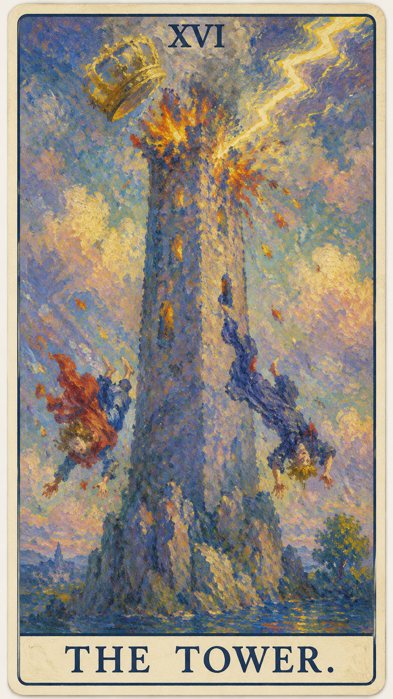

— 貳 · CORRESPONDENCES
对应要素Esoteric Correspondences
- 元素 Element
- 火崩塌、突变、真相、旧结构瓦解
- 星座 / 行星
- 火星崩塌、突变、真相、旧结构瓦解
- 生命之树 Tree of Life
- Peh路径与此牌的精神功课相连
- 希伯来字母
- Pe（口）通过崩塌理解当前阶段的命运功课，在废墟中看见真相与重建的契机


高塔是突然而剧烈的觉醒。原本坚不可摧的塔，被一道突如其来的闪电击中，瞬间崩溃并燃烧起来。这雷鸣电闪，是神的愤怒与制裁的象征：它击碎虚假的安全感，让被隐藏的问题再也无法继续伪装。
← 返回大厅 / 选择其它卡牌高塔是突然而剧烈的觉醒。原本坚不可摧的塔，被一道突如其来的闪电击中，瞬间崩溃并燃烧起来。这雷鸣电闪，是神的愤怒与制裁的象征：它击碎虚假的安全感，让被隐藏的问题再也无法继续伪装。
当这张牌出现，说明你正遇到“崩塌、突变、真相、旧结构瓦解”的课题。它既可能表现为外部事件，也可能是内心正在成熟的一个阶段。在全部 22 张大牌中，高塔无疑是最令人不安的一张——它几乎是唯一一张无论正位还是逆位、从任何角度看都只引出负面结论的牌，区别只在于负面的程度，以及当事人对它的接受程度。然而很多时候，高塔的出现并不真的代表毁灭，而是我们内心对毁灭的恐惧被无限放大。所以抽到它也不必过于惊慌，尤其当牌阵中其他牌并无明确的毁灭意味时——这个世界或许不像我们想象的那么美好，但也绝不像我们害怕的那么糟糕。
雷电击中高塔，王冠坠落，人物从塔中跌出。高塔代表物质，塔顶的皇冠象征统治与成就；皇冠被雷击落，预示权力、财富与功名在突变中尽数化为乌有。塔中坠落的两人，似是君王与圣职者，他们头朝下、面带惊恐——预示灾难临头时，无论身份与财富都无法幸免。高耸的塔与皇冠象征人类的高傲与自满，这恰是毁灭的根源，令人联想起圣经里的巴别塔。图中闪电溅起的火花共有 22 点，对应塔罗的 22 张大牌；灰色的云象征灾难，黑色的背景预示一段黑暗的时期。倘若运气真的存在，那么厄运与好运的降临，对任何人都是同样公平的。
通过崩塌理解当前阶段的命运功课，在废墟中看见真相与重建的契机
引发剧烈动荡的原因，往往是不可预料的，且来自系统运行体系之外——它不以系统内部成员的意志为转移。所有身处剧烈动荡中的人事物，都无法改变那个引发动荡的源头。这正是高塔最难处之处：它不是你能谈判、修补或拖延的危机，而是一记从天而降、必须承受的雷击。正逆位的差别，仅在于你是迎面接受这场崩塌，还是试图逃避、延迟它的到来。

雷电击中高塔，王冠坠落，人物从塔中跌出。
这张牌的主要符号，象征坚固的结构或信念体系正遭遇突如其来的改变或破坏。
描述突发的启示或灾难，代表突然的、无法预测的变化。
塔顶的崩落表示即使最强大的事物也可能崩溃。
象征毁灭与净化，旧的被烧毁，使新的得以诞生。
代表被改变强行带走的个人，或旧理念与计划的失败。
恐惧与震惊的神情，强调改变的突然与猛烈。
塔建立在不稳定的基础上，象征一种脆弱的状态或不稳的处境。
代表不确定与混乱，意味着不稳的未来。
多变的环境，提醒我们即便外部条件无常，也要寻找内在的稳定。
代表能量与力量，常与阳性能量相关，在此可能指代破坏的力道。
蓝色象征沟通与知识，在这里指即将失去的安全感与理解。
红色代表激情与行动，坠落者的红衣象征其生活中主动力的消散。
塔顶设计似王冠，象征权力与控制的失落。
金色关联财富与高尚，此处金色被破坏，提示重要的损失。
对应此阶段在人生旅程中的功课。
数字 16 是 1 与 6 的相遇，约化为 1+6=7（战车）。它承接了恶魔牌的束缚之后那一记惊雷——当人长期被虚假的结构囚禁，迟早会有一道闪电劈开高墙。16 指向经验累积后的剧烈转折与重整，引导人从事件表层进入更深的精神功课。
在解读时，高塔提醒我们：事件表面的顺逆终会变化，真正值得把握的是牌面所揭示的内在功课。塔的崩塌固然痛苦，却也清出了一片空地，让更真实、更稳固的东西有机会从废墟上重新生长。

正位的高塔表示这股能量正在以最直接的方式爆发出来。它的提示语是：突发变故、破旧立新、混乱的状态、颠覆现状、意料之外的打击、灾难的预兆、痛苦的经历、人生的低谷、突如其来的坏消息、重新开始的信号。顺着牌面主题去面对，你会发现崩塌之中其实藏着一个被强行揭开的真相——与其抗拒，不如认清它，事情会显露出可被把握的方向。
突变，崩塌，危机，真相揭露，震动，重建前的破坏，麻烦不断，遭遇逆境，遭受打击，原有信念崩溃，突发事件，骤变，剧变，动乱，动荡，没有征兆，混乱，启示，内幕显现，揭露秘密，醒悟，觉醒，开悟
火 · 崩塌、突变、真相、旧结构瓦解
感情中，高塔代表关系进入与“崩塌、突变、真相、旧结构瓦解”有关的阶段：意外的分手、与爱人的激烈争执、突如其来的感情变故，或一段得不到亲友祝福、纷扰不断的关系。它常意味着震惊的发现或真相大白，导致关系的根本改变。单身者会被带有强烈张力的人或关系吸引；有伴侣者则可能面对外部压力的冲击，需要围绕信任、边界与真实需求进行更成熟的沟通。
事业学业上，这张牌提示事态可能急剧恶化：突发的瓶颈、意外事故、对上司的不满却苦无对策，乃至成绩骤降、辍学或落榜。它要求你用更高的眼光去看待这场动荡——很多变故并非人力可控，却偏偏要你来承担。不破不立，与其死守已经不再适用的旧结构，不如做好从头再来的准备。
人际关系中适合看清彼此的位置，减少表面的维持。高塔正位常伴随损失金钱、财政赤字、破产、受人连累，以及因口角与人绝交、急躁伤人。财富方面可能预示经济上的剧变——意外的金融危机、投资失败或突如其来的失业，是一个不稳定且不可预测的时期，要结合现实条件与长期影响，做出清醒的安排。
健康生活上，高塔提示身心状态与当前的心理课题相连，常对应突如其来的健康警讯或长期压力的总爆发。此时尤其要留意意外伤害与急性状况，把身体安全放在第一位——若牌阵中同时出现死神、宝剑十一类的危险牌，更应保持平静、不要冒险。适合检查压力的来源、作息的习惯与身体信号，以更稳定的方式重建生活节奏。
遭遇意外，多管闲事，卷入纷争。若问具体事件，正位多表示事情进入剧烈动荡的关键阶段。主动去理解它的意义、接受已经发生的改变，会比单纯等待结果更有力量。

逆位的高塔表示这股崩塌的能量被压抑、被延迟，或被勉强按住。它的提示语是：未能看清现实、拒绝改变、逃避问题、拖延决定、害怕挑战、压抑情绪、自我欺骗、持续的痛苦、无法释怀的过去、挣扎在旧有的模式中。此时最重要的是先看清自己是否正在抗拒这张牌所要求的功课——你或许暂时躲过了那记惊雷，但潜藏的问题仍在，迟早需要直面。
逃避危机，延迟爆发，余震，侥幸，害怕改变，悬崖勒马，遭遇口舌之灾，内部纠纷，风暴前的寂静，个人转变，避灾，远离是非之地，不立危墙之下，择良木而栖，情况紧急
火 · 受阻、延迟、反复与失衡
感情中，逆位的高塔常表现为对必要改变的逃避或拒绝：拖延分手、忽视已经存在的裂痕、害怕改变现状，或对一段早已不合适的关系抱有不切实际的幻想。可能没有经历彻底的、痛苦的分离，但未解决的问题与紧张始终都在。关系若一直无法推进，需要回到双方真实的需求。
事业学业上，逆位的高塔常表现为面对困难听天由命、因紧张而功亏一篑，或大意失荆州。它指向对失败的逃避：拖延决策、害怕接受新挑战、忽视学业问题、仍坚持错误的方向，或过度依赖他人的评价。先正视问题、修正方向、补足信息，再决定下一步，比一味回避更稳妥。
人际方面要小心投射与不公平的交换。逆位的高塔常表现为关系陷入僵局的前兆、与朋友纠纷不断、逞强好胜不知退让，或表面富有实则捉襟见肘、濒临破产。财富方面适合回到理性评估与长期规划，避免被恐惧推着走，眼下并不适合进行任何投资。
健康上，逆位常提示压力被长期累积、情绪被压抑、身体的警讯被刻意忽略——就像风暴来临前那种令人窒息的寂静。问题被一再拖延，反而可能酝酿成更大的危机。建议减少极端做法，正视那些一直被回避的身心信号，重新建立可持续的生活节奏，给自己一个温和释压的出口。
后悔的出行或聚会，狂风暴雨来临前的压抑，令人震动的事情。事情可能延迟、反复或暴露隐藏问题——先正视并修正模式，再谈结果。

当高塔出现在三牌阵中，它提示你从时间维度观察这股能量：过去留下的结构、现在显现的课题，以及未来需要整合的方向。点击下方卡牌揭示隐秘启示。
可能有过一段稳定却未必真实的时期，如今这种稳定被打破，潜藏的问题随之暴露。
正经历剧烈的震荡与改变，可能感到困惑与不安；但这也是清除旧结构、为新事物腾出空间的时机。
可能面临重建与恢复的过程；在高塔带来的破坏之后，有机会建立起更稳固、更真实的基础。